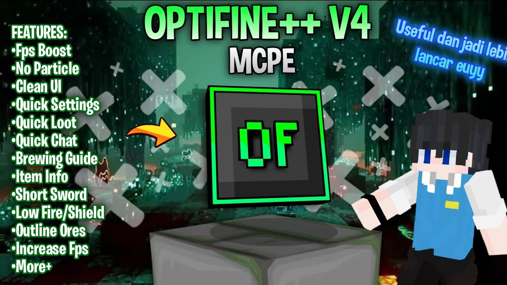

Minecraft Solar Shader (Bedrock)

Experience Minecraft like never before!
Solar Shader brings realistic lighting, soft shadows, and gorgeous colors for beautiful Minecraft worlds. Perfect for screenshots and adventure—works great on most devices.
How to use: Download & open the .mcpack file in Minecraft Bedrock Edition/PE. Activate it from Resource Packs in your world!